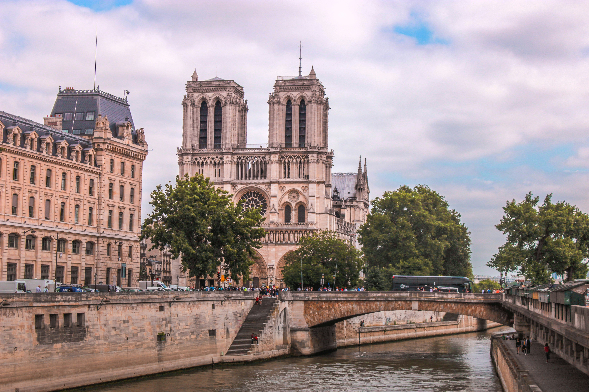
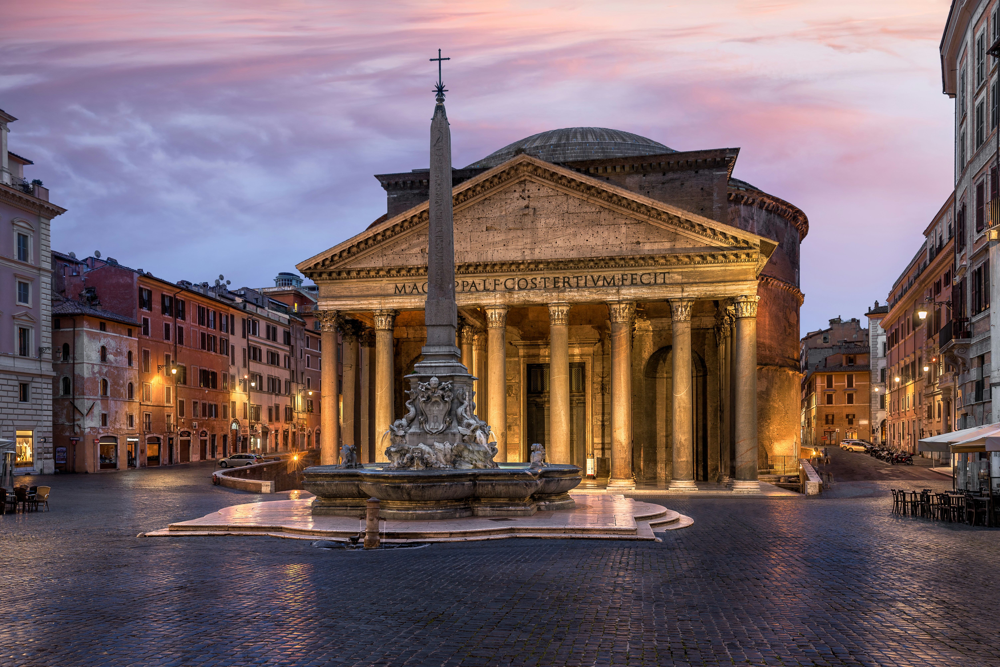
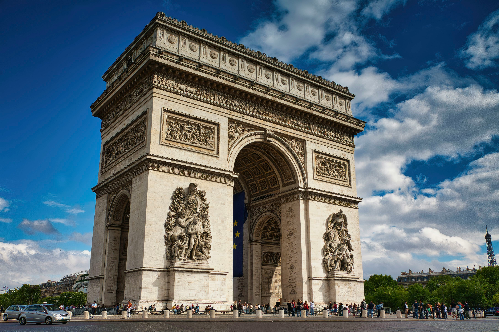

FEATURED ATTRACTIONS

Notre Dame
The cathedral, dedicated to the Virgin Mary, is a fine example of French Gothic architecture.
Monmarte, Paris
Catholic Church, Minor basilica

Sacre-Coeur
Catholic church and minor basilica in Paris dedicated to the Sacred Heart of Jesus.
Parvis Notre-Dame – Place Jean-Paul-II, Paris
Cathedral, Minor basilica

Panthéon
The Panthéon is a monument in the 5th arrondissement of Paris
Place du Panthéon Paris, France
Mausoleum

Arc de Triomphe
The Arc de Triomphe de l'Étoile, is one of the most famous monuments in Paris
Place Charles de Gaulle, Paris, France
Triumphal arch

Palais Garnier
The Palais Garnier is a historic 1,979-seat opera at the Place de l'Opéra
Place de l'Opéra 75009 Paris, France
Opera House

The Louvre
The Louvre is a national art museum in Paris, France. It is located on the Right Bank of the Seine
Musée du Louvre, 75001, Paris, France
Art museum